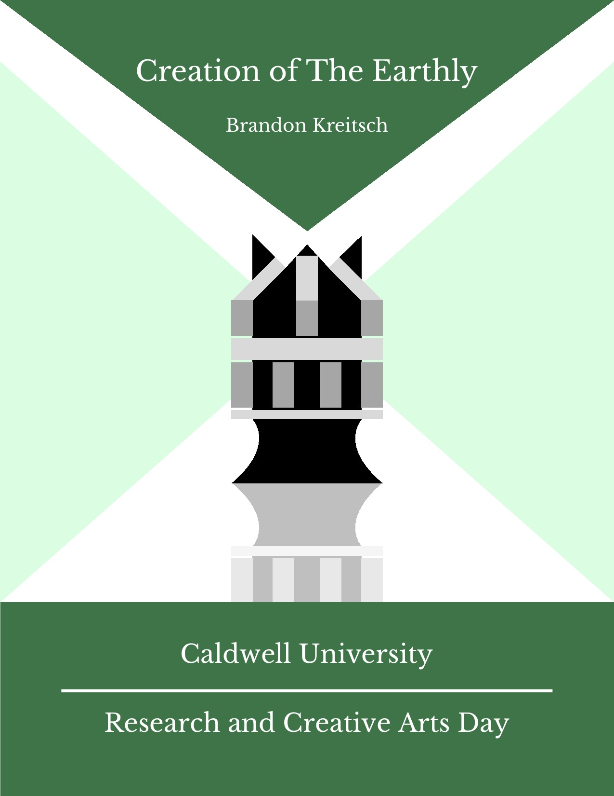
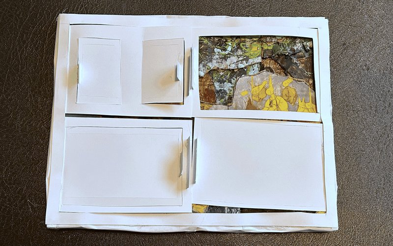

Series I
Stories detailing local company Quartz Productions, as their shady business practices would lead to mind warping tapes, death, and a cult formed around a reality altering clock.
Stories detailing local company Quartz Productions, as their shady business practices would lead to mind warping tapes, death, and a cult formed around a reality altering clock.
2024
View Series →




4 works
Series II
In my series, Creation of The Earthly, I explore the construction of a tree house. Each piece further symbolizes a power structure centered around the Maker figure. World-building and telling a deeper story are very important to me. These two ideas are heavily reflected in my works, including this series. The Maker's creation of a world driven by ambition highlights the alternative meaning of creation as a life-giving force fueled by hopes, dreams, and perseverance.
In my series, Creation of The Earthly, I explore the construction of a tree house. Each piece further symbolizes a power structure centered around the Maker figure. World-building and telling a deeper story are very important to me. These two ideas are heavily reflected in my works, including this series. The Maker's creation of a world driven by ambition highlights the alternative meaning of creation as a life-giving force fueled by hopes, dreams, and perseverance.
2025
View Series →
Series III
Add a description of Chromatic Fragments here — what it explores, what connects the works, what drew you to this body of work.
Add your artist statement for Chromatic Fragments here.
April 27 – May 1, 2026 · Mueller Gallery, Caldwell University
View Series →